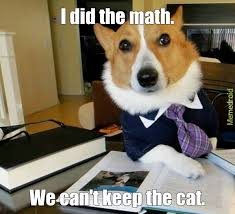

most dog are more friendly and cat

Having a dog is like have a true loyal friend, they will stick around you for life without hesistation of your weird behavour around them. Despite some aggressive kind, Dog will always be cheerful around their and with extra energy they will play around with you everyday with desire to cheer you up. Not only being a loyal friend they also be your lifeguard willing to protect you and your home protecting you and others family members
Dog are smart
Dog also can be trained or taugh to be helpful toward simple task to help people out, and that make them very flexible. They can be cute, helpful and protective where there are many disable people need help from their four legs friend to do their daily basis. Even a cold blood assasin like John Wick also need a dog for his living desire why not you?